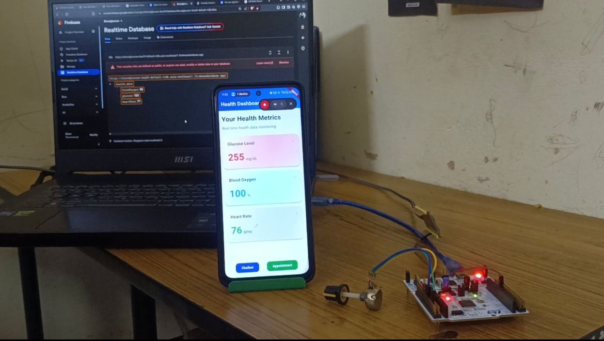
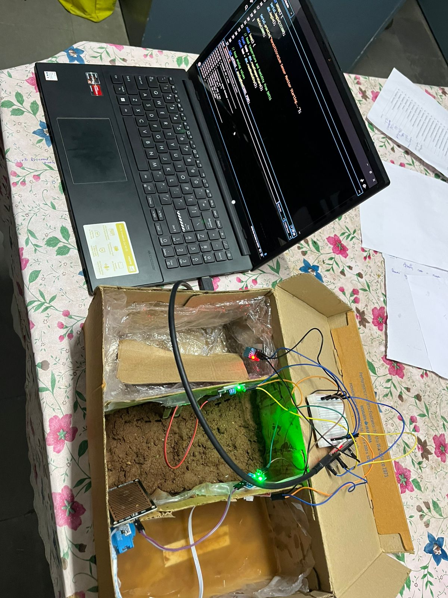
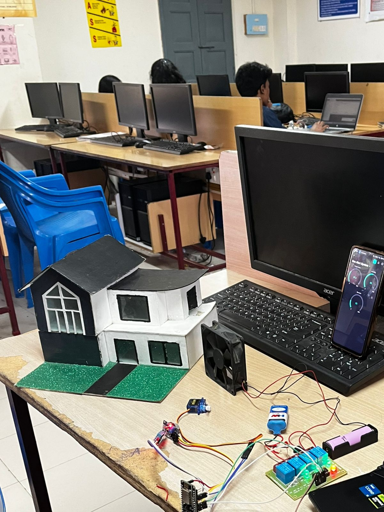

Electronics Engineer | IoT & Embedded Systems | Home Automation Enthusiast
Get in TouchI'm an Electronics Engineer specializing in IoT and Embedded Systems, with a passion for Home Automation. My expertise lies in designing innovative solutions for health, environmental, and safety monitoring. As an IT enthusiast, I integrate hardware and software to create impactful, user-friendly systems.

Developed a system using ESP8266 and STM32 to monitor blood glucose levels in real-time. Integrated with a health assistance AI app powered by Gemini AI for providing health-related suggestions via a chatbot.
View Project
Built a system for vermifiltration water clarity monitoring, with a Flutter-based app for real-time remote data monitoring.
View Project
Designed a safety system using ESP8266 and Arduino. Upon detecting gas, it automatically shuts off the cylinder valve and activates an exhaust fan to ventilate the area.
View ProjectI'm excited to collaborate on innovative projects in IoT, embedded systems, and home automation. Reach out via email or connect with me on social platforms.